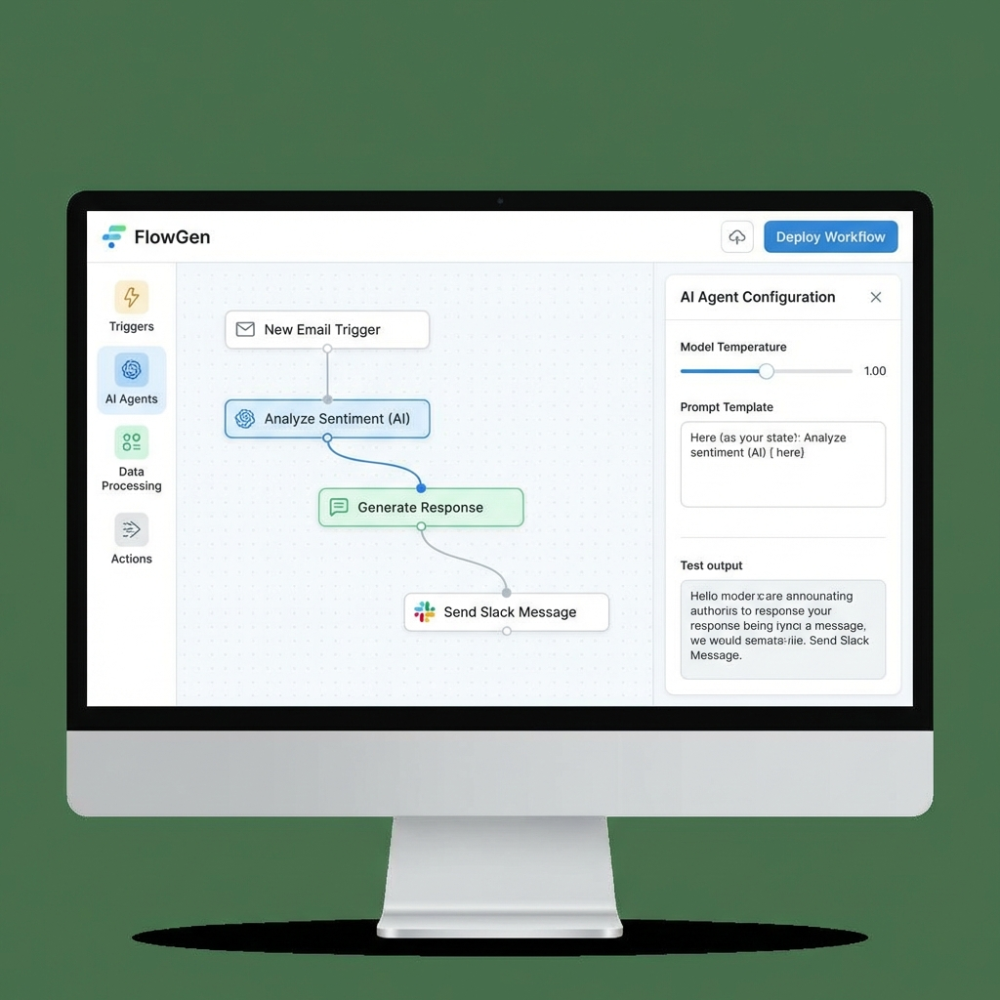

The promise of AI was always that it would democratize technology—that ordinary people could harness computational power without learning to code. For decades, that promise remained unfulfilled. Now, suddenly, it's here. AI agents that anyone can build, deploy, and manage are raising massive funding and transforming how work gets done.
Gumloop raised $50 million for a platform that lets non-technical employees build AI agents. Wonderful hit a $2 billion valuation with $150 million for AI customer service agents. Deeptune took $43 million for reinforcement learning environments for agents. The pattern is clear: AI agents are moving from research labs to workplace tools, and you don't need a computer science degree to use them.
What These Agents Actually Do
The term "AI agent" gets thrown around a lot, often vaguely. What these new platforms actually provide is more specific: software that can perform multi-step tasks autonomously, with humans providing goals and oversight rather than step-by-step instructions.
A customer service agent doesn't just answer questions—it can look up order history, process refunds, update account information, and escalate complex issues, all while maintaining context across a conversation. A workplace automation agent can read emails, extract action items, update project management tools, and draft responses, running continuously without human intervention until it encounters something truly novel.
The No-Code Revolution

What makes this wave of AI agents different from previous automation tools is the interface. Older workflow automation required scripting, API knowledge, and technical configuration. These new platforms offer visual builders: drag, drop, connect, deploy. If you can create a flowchart, you can build an AI agent.
The platforms handle the underlying complexity: integrating with existing software systems, managing authentication, handling errors, maintaining state across long-running processes. Users focus on what they want accomplished; the platform figures out how to accomplish it.
Why Now?
Several converging factors make this moment possible. Large language models have reached sufficient reliability that they can handle ambiguous inputs without constant human correction. API ecosystems have matured to the point where most business software can be controlled programmatically. And perhaps most importantly, the economic pressure to increase productivity has never been higher.
Companies are facing a choice: hire more people at increasing costs, or enable existing employees to accomplish more with AI assistance. Agent platforms offer the second option at a fraction of the cost of traditional automation projects.
The Workforce Implications
For knowledge workers, AI agents represent a fundamental shift in what's possible. Tasks that previously required specialized software skills—data extraction, report generation, cross-system integration—can now be automated by the people who actually do the work. The person who understands the business process can build the automation, without waiting for IT resources.
This democratization has downsides. As agents handle more routine cognitive work, the nature of human contribution shifts toward judgment, creativity, and relationship management. Workers who thrived on routine may struggle; those who can orchestrate AI capabilities will thrive.
The Enterprise Opportunity
For enterprises, agent platforms offer something that's been elusive: automation at scale without massive IT projects. Traditional enterprise automation required months of development, dedicated teams, and significant investment. AI agents can be deployed in days, modified by business users, and scaled across the organization without engineering bottlenecks.
The funding numbers reflect this enterprise opportunity. $50 million for Gumloop, $150 million for Wonderful, $43 million for Deeptune—these are bets that agent platforms will become as ubiquitous in enterprise software as spreadsheets and email.
The Competitive Landscape
Established players are taking notice. Microsoft is integrating agent capabilities into Copilot. Google is building agents into Workspace. Salesforce has Agentforce. The startup funding reflects a race to establish position before the tech giants dominate the category.
The startups' advantage is focus: they can build specifically for agent creation and management, without the legacy constraints of platforms built for other purposes. The giants' advantage is distribution: they can put agent capabilities in front of billions of users instantly.
The winners will be determined by whether enterprises prefer specialized platforms that do one thing exceptionally well, or integrated suites that do many things adequately. History suggests the answer depends on the use case—and both approaches will likely find markets.
What isn't in question is the direction: AI agents are becoming as accessible as spreadsheets, and that accessibility will transform how work gets done across every industry.